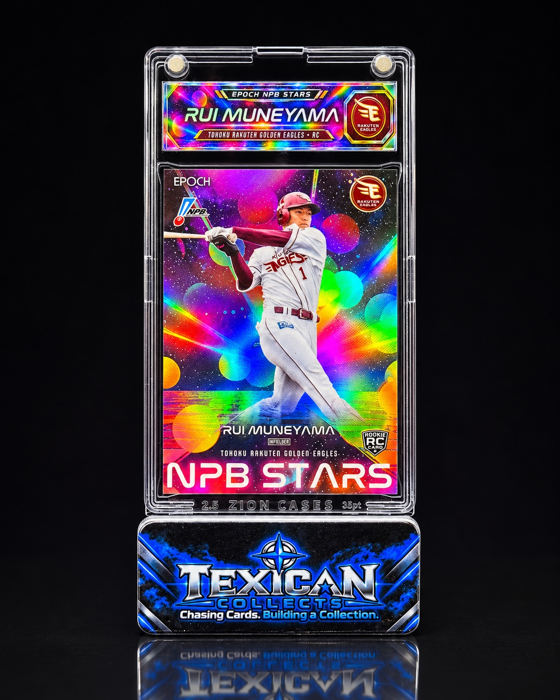
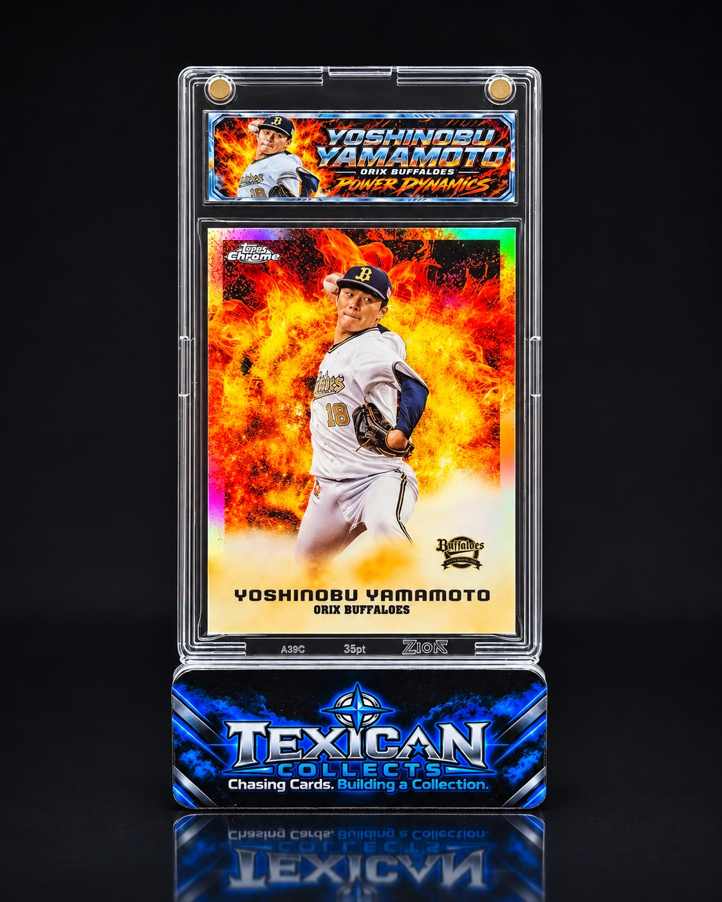

Exploring Japanese Baseball Card Collecting
L2-L3 · A Different Collecting Experience

For American collectors who are used to opening Topps and Bowman products, Japanese baseball cards offer a different experience. Nippon Professional Baseball (NPB) has its own teams, players, and collecting history. Products from companies like BBM, Epoch, and Topps give collectors a chance to discover cards they might not normally see in American hobby shops.
For collectors willing to explore beyond Major League Baseball, Japanese baseball cards open the door to a completely different side of the hobby.
One thing that makes Japanese baseball cards interesting is the variety of products available. BBM and Epoch have their own styles, while Topps has brought familiar products like Chrome and Bowman into the Japanese market. Collectors can find everything from traditional base cards to colorful refractors, autographs, and limited-numbered parallels. For someone who enjoys collecting rare cards, the different designs and sets make opening Japanese products exciting. It also gives American collectors an opportunity to build collections that are different from what they typically see at local card shops or shows.
L4-L5 · Chasing the Next MLB Star

One of the biggest reasons American collectors are becoming interested in Japanese baseball cards is the opportunity to discover future MLB stars. Players like Shohei Ohtani, Yoshinobu Yamamoto, and Roki Sasaki built their reputations in Japan before making the move to Major League Baseball. For collectors, finding cards from these players' earlier years can be exciting because they represent a part of their careers before they became widely recognized by American fans.
Collecting Japanese baseball cards also brings an element of scouting into the hobby. Instead of waiting for a player to become popular in the United States, collectors can follow their development while they are still playing in NPB. Some collectors look for rookie cards, while others chase rare parallels or autographs from players they believe could eventually make an impact in MLB. Of course, not every talented Japanese player will make the transition to American baseball, and card values can change over time. However, learning about these players and watching their careers develop can make collecting feel more personal and rewarding.
A Growing Collecting Community
Social media has made it easier for American collectors to learn about Japanese baseball cards and connect with others who share the same interest. Platforms like Instagram and YouTube allow collectors to show off their collections, open Japanese products, and introduce players that many American baseball fans may not be familiar with. Online card breaks have also created opportunities for collectors to experience Japanese products without having to purchase an entire box themselves.
Another important part of the hobby is the community that develops around collecting. Collectors can share information about upcoming releases, discuss promising young players, and help each other identify cards from unfamiliar sets. Even with language differences and the challenges of purchasing products from overseas, these connections make Japanese baseball cards more approachable. What starts as an interest in a particular player or card can turn into a greater appreciation for Japanese baseball and its culture.
Getting started with Japanese baseball cards often requires more research than collecting familiar MLB products. Collectors may need to compare Japanese and English player names, identify rookie cards, or review unfamiliar checklists before purchasing a box. That extra effort can also make collecting more interesting. Finding a promising player in an unfamiliar set feels different when you have spent time learning about their team and career. Collectors can also share translations, checklist information, and photographs to help others understand what they have pulled. Instead of focusing only on card values, this process encourages people to learn more about the players and their backgrounds. Each new set becomes another opportunity to discover something about Japanese baseball and the people who play it.
As more Japanese players gain recognition in Major League Baseball, interest in their earlier cards may continue to grow. However, collecting is not always about finding the next valuable card. For many collectors, the excitement comes from discovering something new, building a collection they enjoy, and connecting with people who appreciate the same hobby. Japanese baseball cards offer American collectors another way to experience the game and expand their connection to baseball beyond the United States.